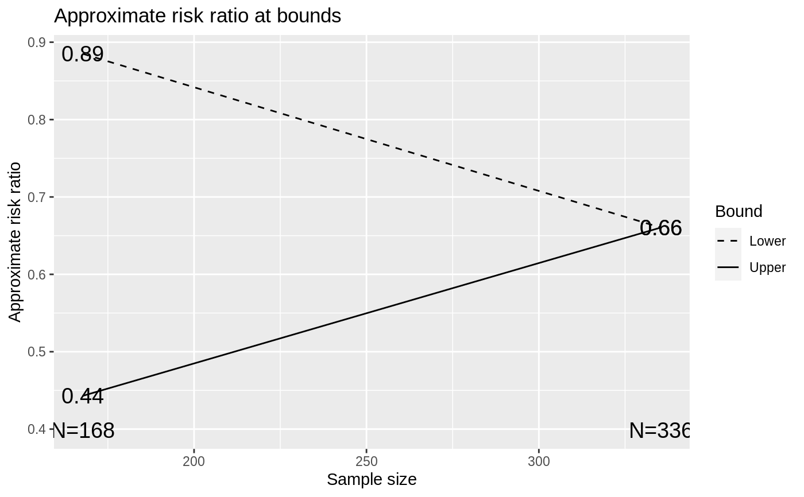

gsBoundSummary.RdA tabular summary of a group sequential design's bounds and their properties
are often useful. The 'vintage' print.gsDesign() function provides a
complete but minimally formatted summary of a group sequential design
derived by gsDesign(). A brief description of the overall design can
also be useful (summary.gsDesign(). A tabular summary of boundary
characteristics oriented only towards LaTeX output is produced by
xtable.gsSurv. More flexibility is provided by
gsBoundSummary() which produces a tabular summary of a
user-specifiable set of package-provided boundary properties in a data
frame. This can also be used to along with functions such as
print.data.frame(), write.table(),
write.csv(), write.csv2() or, from the RTF
package, addTable.RTF() (from the rtf package) to produce console or
R Markdown output or output to a variety of file types. xprint() is
provided for LaTeX output by setting default options for
print.xtable() when producing tables summarizing design
bounds.
Individual transformation of z-value test statistics for interim and final
analyses are obtained from gsBValue(), gsDelta(),
gsHR() and gsCPz() for B-values, approximate treatment effect
(see details), approximate hazard ratio and conditional power, respectively.
The print.gsDesign function is intended to provide an easier output
to review than is available from a simple list of all the output components.
The gsBoundSummary function is intended to provide a summary of
boundary characteristics that is often useful for evaluating boundary
selection; this outputs an extension of the data.frame class that
sets up default printing without row names using
print.gsBoundSummary. summary.gsDesign, on the other hand,
provides a summary of the overall design at a higher level; this provides
characteristics not included in the gsBoundSummary summary and no
detail concerning interim analysis bounds.
In brief, the computed descriptions of group sequential design bounds are as
follows: Z: Standardized normal test statistic at design bound.
p (1-sided): 1-sided p-value for Z. This will be computed as
the probability of a greater EXCEPT for lower bound when a 2-sided design is
being summarized.
delta at bound: Approximate value of the natural parameter at the
bound. The approximate standardized effect size at the bound is generally
computed as Z/sqrt(n). Calling this theta, this is translated
to the delta using the values delta0 and delta1 from
the input x by the formula delta0 +
(delta1-delta0)/theta1*theta where theta1 is the alternate
hypothesis value of the standardized parameter. Note that this value will be
exponentiated in the case of relative risks, hazard ratios or when the user
specifies logdelta=TRUE. In the case of hazard ratios, the value is
computed instead by gsHR() to be consistent with
plot.gsDesign(). Similarly, the value is computed by gsRR()
when the relative risk is the natural parameter.
Spending: Incremental error spending at each given analysis. For
asymmetric designs, futility bound will have beta-spending summarized.
Efficacy bound always has alpha-spending summarized.
B-value: sqrt(t)*Z where t is the proportion of
information at the analysis divided by the final analysis planned
information. The expected value for B-values is directly proportional to
t.
CP: Conditional power under the estimated treatment difference
assuming the interim Z-statistic is at the study bound
CP H1: Conditional power under the alternate hypothesis treatment
effect assuming the interim test statistic is at the study bound.
PP: Predictive power assuming the interim test statistic is at the
study bound and the input prior distribution for the standardized effect
size. This is the conditional power averaged across the posterior
distribution for the treatment effect given the interim test statistic
value. P{Cross if delta=xx}: For each of the parameter values in
x, the probability of crossing either bound given that treatment
effect is computed. This value is cumulative for each bound. For example,
the probability of crossing the efficacy bound at or before the analysis of
interest.
# S3 method for gsDesign summary(object, information = FALSE, timeunit = "months", ...) # S3 method for gsDesign print(x, ...) gsBoundSummary( x, deltaname = NULL, logdelta = FALSE, Nname = NULL, digits = 4, ddigits = 2, tdigits = 0, timename = "Month", prior = normalGrid(mu = x$delta/2, sigma = 10/sqrt(x$n.fix)), POS = FALSE, ratio = NULL, exclude = c("B-value", "Spending", "CP", "CP H1", "PP"), r = 18, ... ) xprint( x, include.rownames = FALSE, hline.after = c(-1, which(x$Value == x[1, ]$Value) - 1, nrow(x)), ... ) # S3 method for gsBoundSummary print(x, row.names = FALSE, digits = 4, ...) gsBValue(z, i, x, ylab = "B-value", ...) gsDelta(z, i, x, ylab = NULL, ...) gsRR(z, i, x, ratio = 1, ylab = "Approximate risk ratio", ...) gsHR(z, i, x, ratio = 1, ylab = "Approximate hazard ratio", ...) gsCPz(z, i, x, theta = NULL, ylab = NULL, ...)
| object | An item of class |
|---|---|
| information | indicator of whether |
| timeunit | Text string with time units used for time-to-event designs
created with |
| ... | This allows many optional arguments that are standard when
calling |
| x | An item of class |
| deltaname | Natural parameter name. If default |
| logdelta | Indicates whether natural parameter is the natural logarithm
of the actual parameter. For example, the relative risk or odds-ratio would
be put on the logarithmic scale since the asymptotic behavior is 'more
normal' than a non-transformed value. As with |
| Nname | This will normally be changed to |
| digits | Number of digits past the decimal to be printed in the body of the table. |
| ddigits | Number of digits past the decimal to be printed for the natural parameter delta. |
| tdigits | Number of digits past the decimal point to be shown for estimated timing of each analysis. |
| timename | Text string indicating time unit. |
| prior | A prior distribution for the standardized effect size. Must be
of the format produced by |
| POS | This is an indicator of whether or not probability of success
(POS) should be estimated at baseline or at each interim based on the prior
distribution input in |
| ratio | Sample size ratio assumed for experimental to control treatment
group sample sizes. This only matters when |
| exclude | A list of test statistics to be excluded from design boundary
summary produced; see details or examples for a list of all possible output
values. A value of |
| r | See |
| include.rownames | indicator of whether or not to include row names in output. |
| hline.after | table lines after which horizontal separation lines should be set; default is to put lines between each analysis as well as at the top and bottom of the table. |
| row.names | indicator of whether or not to print row names |
| z | A vector of z-statistics |
| i | A vector containing the analysis for each element in |
| ylab | Used when functions are passed to |
| theta | A scalar value representing the standardized effect size used
for conditional power calculations; see |
gsBValue(), gsDelta(), gsHR() and
gsCPz() each returns a vector containing the B-values, approximate
treatment effect (see details), approximate hazard ratio and conditional
power, respectively, for each value specified by the interim test statistics
in z at interim analyses specified in i.
summary returns a text string summarizing the design at a high level.
This may be used with gsBoundSummary for a nicely formatted, concise
group sequential design description.
gsBoundSummary returns a table in a data frame providing a variety of
boundary characteristics. The tabular format makes formatting particularly
amenable to place in documents either through direct creation of readable by
Word (see the rtf package) or to a csv format readable by spreadsheet
software using write.csv.
print.gsDesign prints an overall summary a group sequential design.
While the design description is complete, the format is not as `document
friendly' as gsBoundSummary.
print.gsBoundSummary is a simple extension of print.data.frame
intended for objects created with gsBoundSummary. The only extension
is to make the default to not print row names. This is probably `not good R
style' but may be helpful for many lazy R programmers like the author.
The manual is not linked to this help file, but is available in library/gsdesign/doc/gsDesignManual.pdf in the directory where R is installed.
Jennison C and Turnbull BW (2000), Group Sequential Methods with Applications to Clinical Trials. Boca Raton: Chapman and Hall.
Keaven Anderson keaven\_anderson@merck.
library(ggplot2) # survival endpoint using gsSurv # generally preferred over nSurv since time computations are shown xgs <- gsSurv(lambdaC = .2, hr = .5, eta = .1, T = 2, minfup = 1.5) gsBoundSummary(xgs, timename = "Year", tdigits = 1)#> Analysis Value Efficacy Futility #> IA 1: 33% Z 3.0107 -0.2388 #> N: 460 p (1-sided) 0.0013 0.5944 #> Events: 33 ~HR at bound 0.3457 1.0879 #> Year: 0.8 P(Cross) if HR=1 0.0013 0.4056 #> P(Cross) if HR=0.5 0.1412 0.0148 #> IA 2: 67% Z 2.5465 0.9410 #> N: 460 p (1-sided) 0.0054 0.1733 #> Events: 65 ~HR at bound 0.5298 0.7907 #> Year: 1.3 P(Cross) if HR=1 0.0062 0.8347 #> P(Cross) if HR=0.5 0.5815 0.0437 #> Final Z 1.9992 1.9992 #> N: 460 p (1-sided) 0.0228 0.0228 #> Events: 97 ~HR at bound 0.6655 0.6655 #> Year: 2 P(Cross) if HR=1 0.0233 0.9767 #> P(Cross) if HR=0.5 0.9000 0.1000#> [1] "Asymmetric two-sided group sequential design with non-binding futility bound, 3 analyses, time-to-event outcome with sample size 460 and 97 events required, 90 percent power, 2.5 percent (1-sided) Type I error to detect a hazard ratio of 0.5. Enrollment and total study durations are assumed to be 0.5 and 2 months, respectively. Efficacy bounds derived using a Hwang-Shih-DeCani spending function with gamma = -4. Futility bounds derived using a Hwang-Shih-DeCani spending function with gamma = -2."# survival endpoint using nSurvival # NOTE: generally recommend gsSurv above for this! ss <- nSurvival( lambda1 = .2, lambda2 = .1, eta = .1, Ts = 2, Tr = .5, sided = 1, alpha = .025, ratio = 2 ) xs <- gsDesign(nFixSurv = ss$n, n.fix = ss$nEvents, delta1 = log(ss$lambda2 / ss$lambda1)) gsBoundSummary(xs, logdelta = TRUE, ratio = ss$ratio)#> Analysis Value Efficacy Futility #> IA 1: 33% Z 3.0107 -0.2387 #> N: 34 p (1-sided) 0.0013 0.5943 #> ~HR at bound 0.3306 1.0917 #> P(Cross) if HR=1 0.0013 0.4057 #> P(Cross) if HR=0.5 0.1412 0.0148 #> IA 2: 67% Z 2.5465 0.9411 #> N: 67 p (1-sided) 0.0054 0.1733 #> ~HR at bound 0.5158 0.7830 #> P(Cross) if HR=1 0.0062 0.8347 #> P(Cross) if HR=0.5 0.5815 0.0437 #> Final Z 1.9992 1.9992 #> N: 100 p (1-sided) 0.0228 0.0228 #> ~HR at bound 0.6542 0.6542 #> P(Cross) if HR=1 0.0233 0.9767 #> P(Cross) if HR=0.5 0.9000 0.1000# generate some of the above summary statistics for the upper bound z <- xs$upper$bound # B-values gsBValue(z = z, i = 1:3, x = xs)#> [1] 1.738251 2.079233 1.999226# hazard ratio gsHR(z = z, i = 1:3, x = xs)#> [1] 0.3521851 0.5357126 0.6702573# conditional power at observed treatment effect gsCPz(z = z[1:2], i = 1:2, x = xs)#> [1] 0.9999676 0.9737643# conditional power at H1 treatment effect gsCPz(z = z[1:2], i = 1:2, x = xs, theta = xs$delta)#> [1] 0.9937804 0.9809768# information-based design xinfo <- gsDesign(delta = .3, delta1 = .3) gsBoundSummary(xinfo, Nname = "Information")#> Analysis Value Efficacy Futility #> IA 1: 33% Z 3.0107 -0.2387 #> Information: 41.64 p (1-sided) 0.0013 0.5943 #> ~delta at bound 0.4666 -0.0370 #> P(Cross) if delta=0 0.0013 0.4057 #> P(Cross) if delta=0.3 0.1412 0.0148 #> IA 2: 67% Z 2.5465 0.9411 #> Information: 83.27 p (1-sided) 0.0054 0.1733 #> ~delta at bound 0.2791 0.1031 #> P(Cross) if delta=0 0.0062 0.8347 #> P(Cross) if delta=0.3 0.5815 0.0437 #> Final Z 1.9992 1.9992 #> Information: 124.91 p (1-sided) 0.0228 0.0228 #> ~delta at bound 0.1789 0.1789 #> P(Cross) if delta=0 0.0233 0.9767 #> P(Cross) if delta=0.3 0.9000 0.1000# show all available boundary descriptions gsBoundSummary(xinfo, Nname = "Information", exclude = NULL)#> Analysis Value Efficacy Futility #> IA 1: 33% Z 3.0107 -0.2387 #> Information: 41.64 p (1-sided) 0.0013 0.5943 #> ~delta at bound 0.4666 -0.0370 #> Spending 0.0013 0.0148 #> B-value 1.7383 -0.1378 #> CP 1.0000 0.0012 #> CP H1 0.9938 0.4689 #> PP 0.9897 0.0373 #> P(Cross) if delta=0 0.0013 0.4057 #> P(Cross) if delta=0.3 0.1412 0.0148 #> IA 2: 67% Z 2.5465 0.9411 #> Information: 83.27 p (1-sided) 0.0054 0.1733 #> ~delta at bound 0.2791 0.1031 #> Spending 0.0049 0.0289 #> B-value 2.0792 0.7684 #> CP 0.9738 0.0713 #> CP H1 0.9810 0.4223 #> PP 0.9427 0.1157 #> P(Cross) if delta=0 0.0062 0.8347 #> P(Cross) if delta=0.3 0.5815 0.0437 #> Final Z 1.9992 1.9992 #> Information: 124.91 p (1-sided) 0.0228 0.0228 #> ~delta at bound 0.1789 0.1789 #> Spending 0.0188 0.0563 #> B-value 1.9992 1.9992 #> P(Cross) if delta=0 0.0233 0.9767 #> P(Cross) if delta=0.3 0.9000 0.1000# add intermediate parameter value xinfo <- gsProbability(d = xinfo, theta = c(0, .15, .3)) class(xinfo) # note this is still as gsDesign class object#> [1] "gsDesign"gsBoundSummary(xinfo, Nname = "Information")#> Analysis Value Efficacy Futility #> IA 1: 33% Z 3.0107 -0.2387 #> Information: 41.64 p (1-sided) 0.0013 0.5943 #> ~delta at bound 0.4666 -0.0370 #> P(Cross) if delta=0 0.0013 0.4057 #> P(Cross) if delta=0.15 0.0205 0.1138 #> P(Cross) if delta=0.3 0.1412 0.0148 #> IA 2: 67% Z 2.5465 0.9411 #> Information: 83.27 p (1-sided) 0.0054 0.1733 #> ~delta at bound 0.2791 0.1031 #> P(Cross) if delta=0 0.0062 0.8347 #> P(Cross) if delta=0.15 0.1243 0.3523 #> P(Cross) if delta=0.3 0.5815 0.0437 #> Final Z 1.9992 1.9992 #> Information: 124.91 p (1-sided) 0.0228 0.0228 #> ~delta at bound 0.1789 0.1789 #> P(Cross) if delta=0 0.0233 0.9767 #> P(Cross) if delta=0.15 0.3636 0.6364 #> P(Cross) if delta=0.3 0.9000 0.1000# now look at a binomial endpoint; specify H0 treatment difference as p1-p2=.05 # now treatment effect at bound (say, thetahat) is transformed to # xp$delta0 + xp$delta1*(thetahat-xp$delta0)/xp$delta np <- nBinomial(p1 = .15, p2 = .10) xp <- gsDesign(n.fix = np, endpoint = "Binomial", delta1 = .05) summary(xp)#> [1] "Asymmetric two-sided group sequential design with non-binding futility bound, 3 analyses, sample size 1963, 90 percent power, 2.5 percent (1-sided) Type I error. Efficacy bounds derived using a Hwang-Shih-DeCani spending function with gamma = -4. Futility bounds derived using a Hwang-Shih-DeCani spending function with gamma = -2."gsBoundSummary(xp, deltaname = "p[C]-p[E]")#> Analysis Value Efficacy Futility #> IA 1: 33% Z 3.0107 -0.2387 #> N: 655 p (1-sided) 0.0013 0.5943 #> ~p[C]-p[E] at bound 0.0778 -0.0062 #> P(Cross) if p[C]-p[E]=0 0.0013 0.4057 #> P(Cross) if p[C]-p[E]=0.05 0.1412 0.0148 #> IA 2: 67% Z 2.5465 0.9411 #> N: 1309 p (1-sided) 0.0054 0.1733 #> ~p[C]-p[E] at bound 0.0465 0.0172 #> P(Cross) if p[C]-p[E]=0 0.0062 0.8347 #> P(Cross) if p[C]-p[E]=0.05 0.5815 0.0437 #> Final Z 1.9992 1.9992 #> N: 1963 p (1-sided) 0.0228 0.0228 #> ~p[C]-p[E] at bound 0.0298 0.0298 #> P(Cross) if p[C]-p[E]=0 0.0233 0.9767 #> P(Cross) if p[C]-p[E]=0.05 0.9000 0.1000# estimate treatment effect at lower bound # by setting delta0=0 (default) and delta1 above in gsDesign # treatment effect at bounds is scaled to these differences # in this case, this is the difference in event rates gsDelta(z = xp$lower$bound, i = 1:3, xp)#> [1] -0.006166098 0.017187789 0.029813687# binomial endpoint with risk ratio estimates n.fix <- nBinomial(p1 = .3, p2 = .15, scale = "RR") xrr <- gsDesign(k = 2, n.fix = n.fix, delta1 = log(.15 / .3), endpoint = "Binomial") gsBoundSummary(xrr, deltaname = "RR", logdelta = TRUE)#> Analysis Value Efficacy Futility #> IA 1: 50% Z 2.7500 0.4122 #> N: 168 p (1-sided) 0.0030 0.3401 #> ~RR at bound 0.4429 0.8851 #> P(Cross) if RR=1 0.0030 0.6599 #> P(Cross) if RR=0.5 0.3412 0.0269 #> Final Z 1.9811 1.9811 #> N: 336 p (1-sided) 0.0238 0.0238 #> ~RR at bound 0.6605 0.6605 #> P(Cross) if RR=1 0.0239 0.9761 #> P(Cross) if RR=0.5 0.9000 0.1000gsRR(z = xp$lower$bound, i = 1:3, xrr)#> [1] 1.0732500 0.8211496 NA# delta is odds-ratio: sample size slightly smaller than for relative risk or risk difference n.fix <- nBinomial(p1 = .3, p2 = .15, scale = "OR") xOR <- gsDesign(k = 2, n.fix = n.fix, delta1 = log(.15 / .3 / .85 * .7), endpoint = "Binomial") gsBoundSummary(xOR, deltaname = "OR", logdelta = TRUE)#> Analysis Value Efficacy Futility #> IA 1: 50% Z 2.7500 0.4122 #> N: 166 p (1-sided) 0.0030 0.3401 #> ~OR at bound 0.3526 0.8553 #> P(Cross) if OR=1 0.0030 0.6599 #> P(Cross) if OR=0.41 0.3412 0.0269 #> Final Z 1.9811 1.9811 #> N: 332 p (1-sided) 0.0238 0.0238 #> ~OR at bound 0.5880 0.5880 #> P(Cross) if OR=1 0.0239 0.9761 #> P(Cross) if OR=0.41 0.9000 0.1000# for nice LaTeX table output, use xprint xprint(xtable(gsBoundSummary(xOR, deltaname = "OR", logdelta = TRUE), caption = "Table caption."))#> % latex table generated in R 4.0.3 by xtable 1.8-4 package #> % Thu Jan 7 21:25:26 2021 #> \begin{table}[ht] #> \centering #> \begin{tabular}{llrr} #> \hline #> Analysis & Value & Efficacy & Futility \\ #> \hline #> IA 1: 50\% & Z & 2.75 & 0.41 \\ #> N: 166 & p (1-sided) & 0.00 & 0.34 \\ #> & \~{}OR at bound & 0.35 & 0.86 \\ #> & P(Cross) if OR=1 & 0.00 & 0.66 \\ #> & P(Cross) if OR=0.41 & 0.34 & 0.03 \\ #> \hline #> Final & Z & 1.98 & 1.98 \\ #> N: 332 & p (1-sided) & 0.02 & 0.02 \\ #> & \~{}OR at bound & 0.59 & 0.59 \\ #> & P(Cross) if OR=1 & 0.02 & 0.98 \\ #> & P(Cross) if OR=0.41 & 0.90 & 0.10 \\ #> \hline #> \end{tabular} #> \caption{Table caption.} #> \end{table}